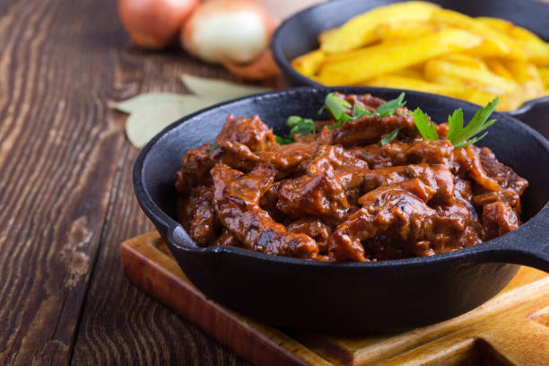

History
The dish originated in Russia in the 19th century; and it was named after Aleksandr Grigorievich Stroganoff - a Russian diplomat, ambassador to Spain, Sweden, and the Ottoman Empire.
Overview
Prep: 20 minsCook: 30 minsServings: 4 to 6 servings

Ingredients
1 1/2 pounds beef tenderloin, sliced into thin, 2-inch strips
2 onions, finely chopped
4 ounces (1/2 cup) unsalted butter
4 ounces button mushrooms, sliced
1 tablespoon all-purpose flour
1/2 cup beef stock
1 tablespoon tomato paste
1/2 cup sour cream
1 pinch dry mustard
Salt and ground black pepper, to taste
Steps to Make It
Season beef tenderloin strips with salt and pepper and set aside.
In a large saucepan, sauté onions in butter until translucent.
Add mushrooms and sauté about 2 minutes or until collapsed.
Add reserved beef strips and sauté for 5 minutes. Stir in flour.
In a small bowl or measuring cup, mix together beef stock with dry mustard and tomato paste until well blended and pour into the pan. Bring to a boil, reduce heat, and simmer on low for no more than 15 minutes (or until beef is to your liking).
Temper sour cream with a few ladles of hot cooking liquid. If using wine, add it to the sour cream. Return tempered mixture to pan and heat through until thickened.
Adjust seasonings and serve with pan-fried potatoes, sliced pickles and more sour cream on the side.
Americanized Versions
The reason I chose to share this recipe is obvious: I was born in Russia and moved to United States 18 years ago. Beef Stroganoff was always my favorite meal. My mom used to cook it for me when I was a kid and growing up I was helping her cooking this dish. I was really happy when I found out there are also Americanized Versions for this traditional beef stroganoff recipe. In Russian-American restaurants, beef stroganoff is typically served with egg noodles, but crispy pan-fried potatoes are the traditional Russian way to serve stroganoff.